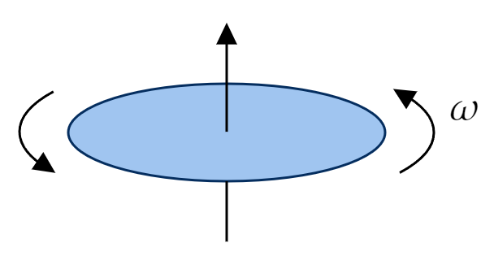
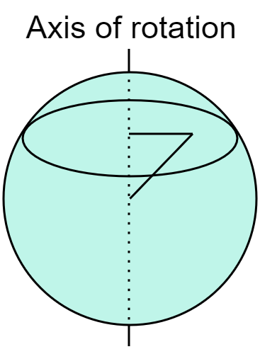

(a) A phonograph record carries a uniform density of "static electricity" $\sigma $. If it rotates at angular velocity $\omega $, what is the surface current density $K $ at a distance $r $ from the center?
(b) A uniformly charged solid sphere, of radius $R $ and total charge $Q $, is centered at the origin and spinning at a constant angular velocity $\omega $ about the $z $-axis. Find the current density $\mathbf{J} $ at any point $(r,\theta ,\phi ) $ within the sphere.
Recall that
\[\mathbf{K}=\sigma \mathbf{v}\tag{Eq. 5.23, page 219} \]And that for circular motion
\[v=\omega r \]So
\[\mathbf{K}=\sigma \boldsymbol{\omega }r \]The direction of $\boldsymbol{\omega } $ and $\mathbf{K} $ are clear from context, and we may write
\[K=\sigma \omega r \] Recall that
\[\mathbf{J}=\rho \mathbf{v}\tag{Eq. 5.26, page 219} \]In this case, we have to account for circular motion at a varying radius: the radius of rotation depends on the radial distance to the origin and the angle $\theta $:
\[\mathbf{v}=\omega r \sin \left( \theta \right) \hat{\phi } \]So
\[\mathbf{J}=\rho \omega r \sin \left( \theta \right) \hat{\phi } \]Since the (solid) sphere is uniformly charged, we may wish to write the above in terms of $R $ rather than $\rho $:
\begin{align*} \rho &= \frac{\text{charge} }{\text{volume} } \\ &= \frac{Q}{\frac{4}{3}\pi R^3 } \end{align*}Giving:
\[\mathbf{J}=\frac{Q}{\frac{4}{3}\pi R^3 }\omega r \sin \left( \theta \right) \hat{\phi } \] 